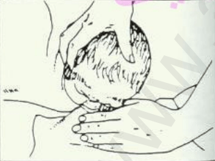
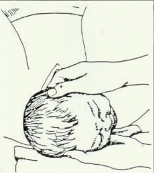
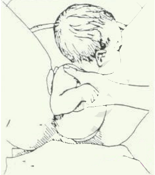
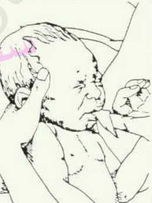

الولادة الطارئة
الولادة الطارئة
المعالجة
- تحتاج الأم للراحة بين الانقباضات لدى يجب تهدئتها و تشجيعها.
- يجب أن تضطجع الأم على ظهرها وتبعد ما بين رجليها بعد أن يشتد الطلق والانقباضات, وبذلك يمكن رؤية أول إشارة للولادة.
- عند بروز رأس الطفل, اغمس يديك في سائل مطهر وأحط بهما الرأس برفق، لا تسحب الرأس أو تشده

- متى برز الرأس قل للأم أن تكف عن الدفع، دعها تلهث, هذا يمنع الرأس من البروز بسرعة كبيرة وقد تتوقف الانقباضات بضع دقائق، وقد يدور الرأس، فلا تفعل شيئا بل اسند الرأس بيديك.

- عند بروز المنكبان امسك بالطفل من تحت إبطيه وارفعه و ضعه على بطن الأم, لاحظ أن الوليد ينزلق، ولهذا أمسك به بإحكام.

- إذا تمت الولادة ضع الوليد فوق بطن الأم برأس منخفض كي يسيل المخاط من الفم والأنف, حاول تنظيف فمه و أنفه. قد يلهث الطفل ويبكى في هذه المرحلة وهذا أمر طبيعي, وهو مقدمة للتنفس الرتيب،

- لف الطفل ببطانية أو منشفة, ودع أمه تحتضنه.
- انتظر خروج المشيمة, وهي تبرز كنسيج أحمر لحمي، تخرج عادة بعد مرور 30 دقيقة من الولادة.
- اربط بقوة الحبل السري بخيط على مسافة 10 سنتيمترات من سرة الطفل, لا تقطع الحبل الا اذا فقدت الامل في مجي الطبيب أو القابلة.
الاجهاض
علامات الاجهاض
- ظهور نزيف مهبلي يكون في الاول فاتح و بعدها ثقيل و كثيف.
- ألم و أوجاع أسفل الظهر.
- تقلصات شديدة في البطن.
- حمى و ضعف.
- إذا ظهرت هذه الأعراض يقتضى استدعاء الطبيب بسرعة أو طلب سيارة إسعاف فوراً
- قد تكون آلام الظهر، ألم في البطن، أو التقلصات الشديدة علامات تنبأ للإجهاض، حتى من دون ظهور أي نزيف.
المعالجة
- بعد فحص سريع للمرأة و ظهور علامات الاجهاض يجب طلب سيارة إسعاف.
- مراقبة العلامات الحيوية (الوعي, النبض و التنفس) .
- قبل وصول الاسعاف ينبغي للمرأة أن تضطجع على فراش مغطى بغطاء من البلاستيك ومنشفة.
- إستلقاء المرأة على الظهر مع إبقاء ركبتيها متباعدتين عن بعضهما البعض ورفعهما قليلا و تلك أفضل وضعية.
- وضع المناشف بين رجليها خصوصا إن بدأ النزيف من المهبل.
- عند توقف النزيف استبدل المناشف بمنديل صحي للتنظيف و مص ما تبقى من النزف ولكن لا تستعمل سدادة قطنية للمهبل أي لاتستعمل القطن كسدادة.